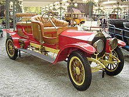

Мерседес — німецька торгова марка транспортних засобів та назва ряду компаній-автовиробників, що належать автобудівному концерну «Даймлер» (нім. Daimler AG) та/або виробляють продукцію під цією маркою. Торгова марка належить автобудівному концерну Daimler AG.
1880 1886 року створено триколісний самохідний візок з бензиновим двигуном. Того ж року його творець Карл Бенц отримав патент на винахід. Перший у світі триколісний автомобіль запустили у серійне виробництво.
Через сім років, поступившись Даймлеру першістю, Карл Бенц створив свій чотириколісний автомобіль, а наступного року ще досконаліша конструкція під дивною назвою «Велосипед» пішла в серію.
З приходом в компанію талановитого інженера Ганса Нібеля справи поступово пішли в гору. 1909 року, створивши цілий ряд прекрасних легкових автомобілів, фірма побудувала найвідоміший гоночний автомобіль того часу «Блітц Бенц» з мотором потужністю 200 к.с. і карколомним об'ємом 21594 см3.
З 1886 до 1926 виробила 47555 автомобілів.1890 року Готліб Даймлер, в містечку Бад Каннштат неподалік Штутгарта, заснував компанію свого імені — «Даймлер-Моторен-Гезелльшафт», вирішивши випускати, створений чотирма роками раніше ним самим і Вільгельмом Майбахом, чотириколісний автомобіль. Після низки не дуже вдалих спроб, які все ж знайшли своїх захоплених покупців, конструктору В. Майбаху 1901 року вдалося створити успішний зразок.
Перший «Мерседес-35PS», а саме так він називався, вирізнявся чотирициліндровим двигуном з робочим об'ємом 5913 см3, класичним розташуванням основних агрегатів і красивою (на ті часи) зовнішністю. Через рік світ побачив більш досконалу конструкцію під назвою «Мерседес-Симплекс». Розширився модельний ряд. Найвідоміші представники цієї серії носили горді імена «Мерседес-40/45PS» і «Мерседес-65PS» з двигунами об'ємом 6785 см3 і 9235 см3 відповідно, які дозволяли розвивати швидкість до 90 км/год.
Після злиття 1926 року фірм Daimler і Benz, новий концерн Daimler-Benz зміг ефективно використовувати досвід і знання конструкторів обох компаній, яких очолив Фердинанд Порше. Він повністю оновив виробничу програму, взявши за основу останні моделі Daimler, що випускалися тепер під маркою Mercedes-Benz. Першою новою розробкою Порше 1926 року стала «компресорна» серія К, що включала модель 24/110/160 PS з 6-циліндровим мотором об'ємом 6240 см3. За велику потужність і швидкість (до 145 км/год) її прозвали «смертельною пасткою», вона стала базовою для більш відомої серії моделей S.
Під технічним керівництвом головного конструктора Макса Зайлера (Max Sailer), який змінив Нібеля 1935 року, були створені популярна недорога модель 170V з 4-циліндровим мотором об'ємом 1697 см3, перший в світі серійний легковий автомобіль з дизельним двигуном 260D (1936 рік), а також новий «Великий» Mercedes-Benz 770 (1938 рік) з рамою з балок овального перетину і задньою пружинною підвіскою, що служив нацистським лідерам.
У червні 1909 компанія Daimler-Motoren-Gesellschaft зареєструвала фірмові трьох- і чотирипроменеві зірки як торгову марку, проте за фактом використовувала тільки першу. Символіка позначала перевагу марки в усіх напрямках: на землі, воді і в повітрі.